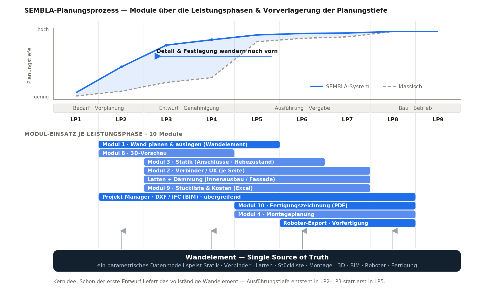

Digitale Planung des kreislauffähigen Massivbausystems — von der Wand bis zu Statik, Fassade, Montage, BIM und robotischem Aufbau. Alle Werkzeuge arbeiten auf einem gemeinsamen Datenmodell, dem Wandelement.
Wandelement.jsonWandelement · Ausgabe → Verbinder-Layout + Latten-/Dämm-Stückliste (CSV)Wandelement · Ausgabe → Montageanleitung (Druck)Wandelement · Ausgabe → Robotsequenz.json/.csvWandelement.json · Ausgabe → DXF / IFC / Projekt.jsonWandelement (Maße) · Ausgabe → NachweiseWandelement · Ausgabe → 3D-AnsichtWandelement · Ausgabe → Excel / CSVWandelement · Ausgabe → PDF (Druck)